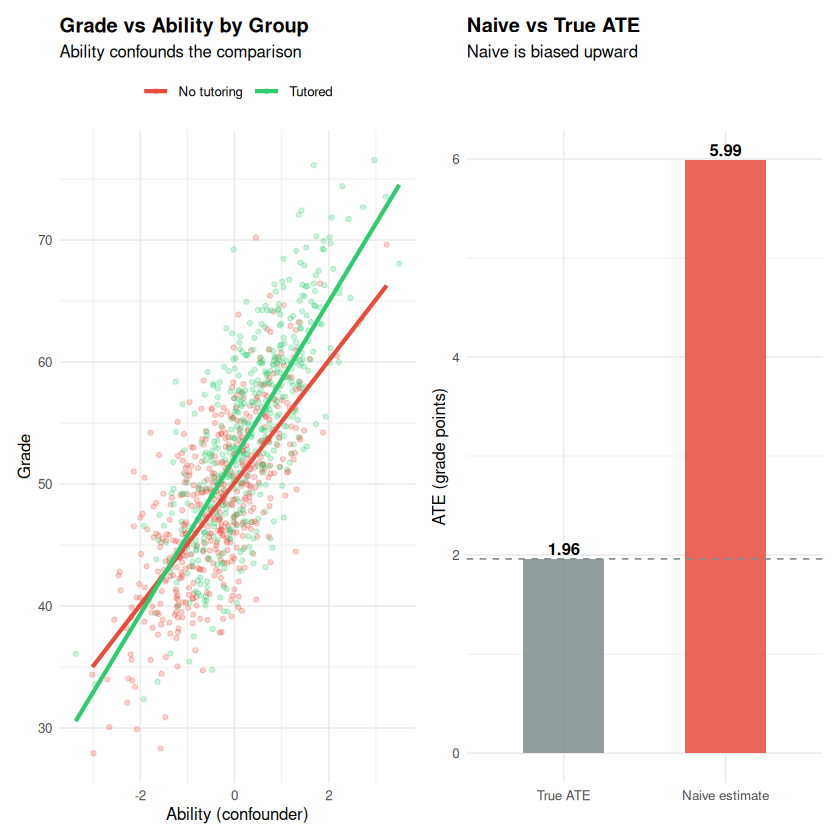
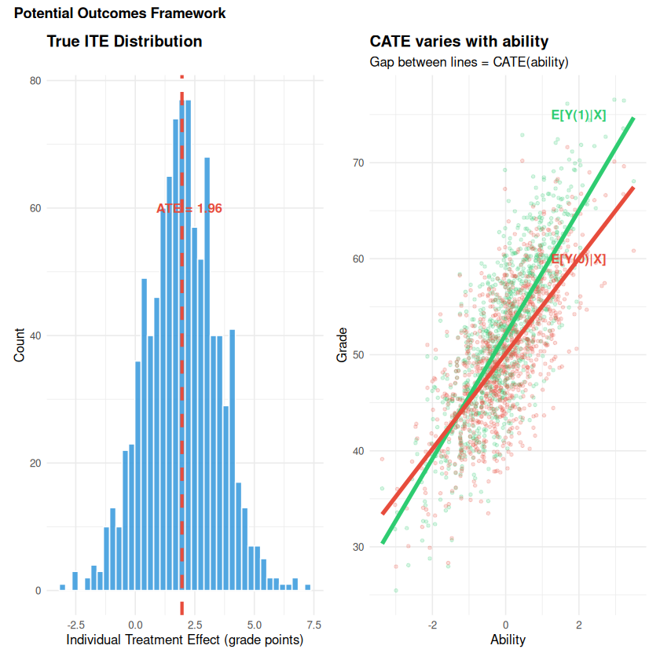
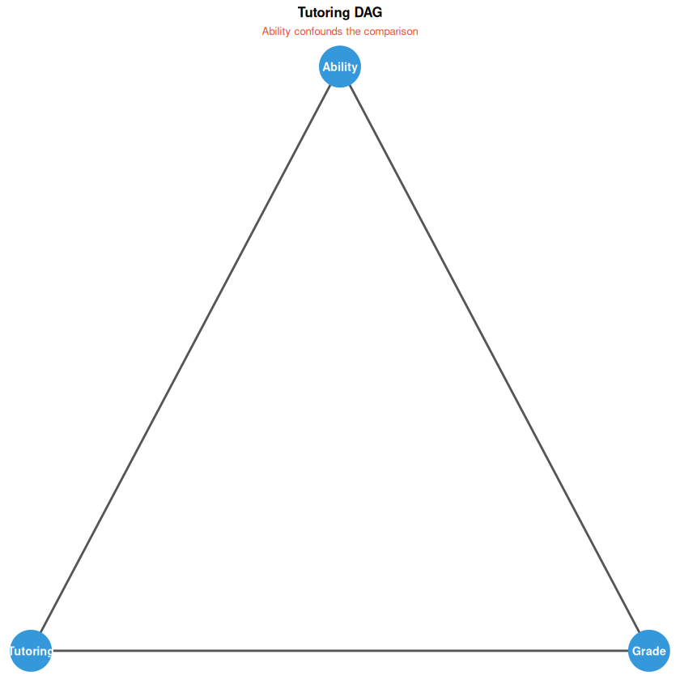
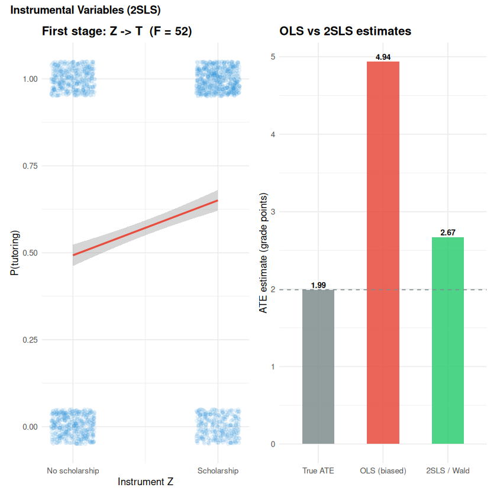
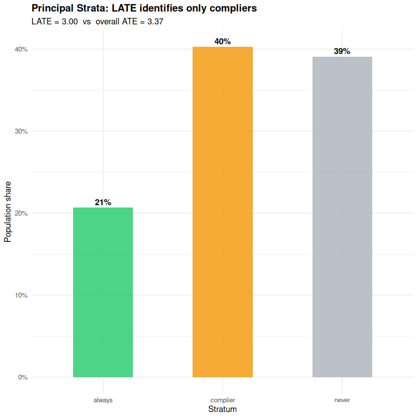

Why does causality matter?#
Topics: Correlation vs Causation - Simpson’s Paradox - Potential Outcomes - SUTVA - DAGs - Backdoor/Frontdoor - Instrumental Variables - LATE
Toy dataset: tutoring program. Students with higher baseline ability are more likely to enrol in tutoring AND get better grades – a classic confounder scenario. We use this single dataset throughout all sections so every number connects.
SS1 – Correlation vs Causation#
What it is#
Correlation: two variables move together – tells us nothing about why
Causation: one variable directly produces a change in another
Most ML models learn correlations – they fail when the environment changes
Key intuition#
Ability causes both tutoring (enrolment) and grades – a classic confounder
Naive comparison of tutored vs untutored mixes the treatment effect with the ability gap that already existed before any tutoring happened
Causal models ask: if we intervene and assign tutoring randomly, what happens to grades?
Why it matters for Data Scientists#
Prediction: correlation is enough – predict churn, fraud, demand
Decision making: causation required – does the discount cause retention?
Policy: causation required – does tutoring actually raise grades?
Gotchas#
High R-squared does not mean causal
Feature importance from a tree model is not causal importance
A/B tests establish causation; observational studies alone do not
library(ggplot2); library(patchwork)
# Show that tutored students have higher grades -- but is it the tutoring?
p1 <- ggplot(df, aes(x = ability, y = grade, color = factor(tutoring))) +
geom_point(alpha = 0.25, size = 1.2) +
geom_smooth(method = "lm", se = FALSE, linewidth = 1.2) +
scale_color_manual(values = c("#E74C3C", "#2ECC71"),
labels = c("No tutoring", "Tutored")) +
labs(title = "Grade vs Ability by Group",
subtitle = "Ability confounds the comparison",
x = "Ability (confounder)", y = "Grade", color = NULL) +
theme_minimal(base_size = 10) +
theme(legend.position = "top", plot.title = element_text(face = "bold"))
# Naive vs truth
est_naive <- mean(df$grade[df$tutoring==1]) - mean(df$grade[df$tutoring==0])
est_true <- mean(df$true_cate)
p2 <- ggplot(
tibble::tibble(
label = factor(c("True ATE", "Naive estimate"), levels = c("True ATE", "Naive estimate")),
value = c(est_true, est_naive)
),
aes(x = label, y = value, fill = label)
) +
geom_col(alpha = 0.85, width = 0.5) +
geom_hline(yintercept = est_true, linetype = "dashed", color = "#7F8C8D") +
scale_fill_manual(values = c("#7F8C8D", "#E74C3C"), guide = "none") +
geom_text(aes(label = round(value, 2)), vjust = -0.3, fontface = "bold") +
labs(title = "Naive vs True ATE",
subtitle = "Naive is biased upward",
x = NULL, y = "ATE (grade points)") +
theme_minimal(base_size = 10) +
theme(plot.title = element_text(face = "bold"))
p1 + p2
`geom_smooth()` using formula = 'y ~ x'
{kind=link}

SS2 – Simpson’s Paradox#
What it is#
A trend appears in every subgroup but reverses (or disappears) when groups are combined
Caused by a confounding variable unequally distributed across groups
Common in medical studies, hiring data, and educational research
Key intuition#
The subgroup analysis is correct – the aggregate is misleading
Always ask: is there a lurking variable that determines both group membership and outcome?
library(dplyr); library(ggplot2); library(patchwork)
# Classic Simpson's: treatment vs recovery, confounded by severity
# Sicker patients (severe) get more treatment AND have worse outcomes
set.seed(42)
simpsons <- tibble::tibble(
severity = rep(c("Mild", "Severe"), c(350, 350)),
treated = c(rep(1, 100), rep(0, 250), rep(1, 250), rep(0, 100)),
recovery_prob = c(rep(0.81,100), rep(0.936,250), rep(0.768,250), rep(0.55,100))
) |> mutate(recovered = rbinom(n(), 1, recovery_prob))
# Subgroup rates
sub <- simpsons |> group_by(severity, treated) |>
summarise(rate = mean(recovered), .groups = "drop") |>
mutate(group = paste(severity, ifelse(treated==1, "Treated", "Control")))
# Aggregate rates
agg <- simpsons |> group_by(treated) |>
summarise(rate = mean(recovered), .groups = "drop") |>
mutate(label = ifelse(treated==1, "Treated", "Control"))
p1 <- ggplot(sub, aes(x = severity, y = rate, fill = factor(treated))) +
geom_col(position = "dodge", alpha = 0.85, width = 0.6) +
geom_text(aes(label = scales::percent(rate, 1)),
position = position_dodge(0.6), vjust = -0.4, fontface = "bold", size = 3.5) +
scale_fill_manual(values = c("#E74C3C","#2ECC71"),
labels = c("Control","Treated")) +
scale_y_continuous(labels = scales::percent, limits = c(0,1.1)) +
labs(title = "Subgroup: treatment HELPS",
x = NULL, y = "Recovery rate", fill = NULL) +
theme_minimal(base_size = 10) + theme(plot.title = element_text(face = "bold"))
p2 <- ggplot(agg, aes(x = label, y = rate, fill = label)) +
geom_col(alpha = 0.85, width = 0.5) +
geom_text(aes(label = scales::percent(rate, 1)), vjust = -0.3, fontface = "bold", size = 2.8) +
scale_fill_manual(values = c("#E74C3C","#2ECC71"), guide = "none") +
scale_y_continuous(labels = scales::percent, limits = c(0,1.1)) +
labs(title = "Aggregate: appears to HURT!",
subtitle = "Confounding reverses conclusion",
x = NULL, y = "Recovery rate") +
theme_minimal(base_size = 10) + theme(plot.title = element_text(face = "bold", color = "#E74C3C"))
p1 + p2 +
plot_annotation(title = "Simpson's Paradox: Aggregation Reverses the Conclusion",
theme = theme(plot.title = element_text(face = "bold", size = 11)))
{kind=link}
SS3 – Potential Outcomes Framework (Rubin Causal Model)#
What it is#
For each unit i, define two potential outcomes:
\(Y_i(1)\) – outcome if treated
\(Y_i(0)\) – outcome if not treated
Individual treatment effect: \(\text{ITE}_i = Y_i(1) - Y_i(0)\)
The fundamental problem#
We can only ever observe ONE potential outcome per person
The other (\(Y_i(1-T_i)\)) is the counterfactual – never observed
We must estimate it from other units – which requires assumptions
Key estimands#
Estimand |
Formula |
Meaning |
|---|---|---|
ITE |
\(Y_i(1) - Y_i(0)\) |
Individual causal effect (never observed) |
ATE |
\(E[Y(1) - Y(0)]\) |
Average effect across population |
ATT |
\(E[Y(1)-Y(0) \mid T=1]\) |
Effect on those actually treated |
CATE |
\(E[Y(1)-Y(0) \mid X=x]\) |
Effect for subgroup with features X=x |
Difference-in-means (valid under randomization only)#
\(\hat{\text{ATE}} = \bar{Y}_{T=1} - \bar{Y}_{T=0}\)
Unbiased only when treatment is randomly assigned; otherwise it absorbs confounding
library(ggplot2); library(patchwork)
# In df: we know both grade_0 and grade_1 (possible only in simulation)
# In real life, only one is observed per student
# ITE distribution (unobservable in practice)
p1 <- ggplot(df, aes(x = true_cate)) +
geom_histogram(bins = 40, fill = "#3498DB", color = "white", alpha = 0.85) +
geom_vline(xintercept = mean(df$true_cate), color = "#E74C3C",
linewidth = 1.2, linetype = "dashed") +
annotate("text", x = mean(df$true_cate) + 0.3, y = 60,
label = sprintf("ATE = %.2f", mean(df$true_cate)),
color = "#E74C3C", fontface = "bold", size = 3.5) +
labs(title = "True ITE Distribution",
x = "Individual Treatment Effect (grade points)", y = "Count") +
theme_minimal(base_size = 10) + theme(plot.title = element_text(face = "bold"))
# CATE varies with ability
p2 <- ggplot(df, aes(x = ability)) +
geom_point(aes(y = grade_1), color = "#2ECC71", alpha = 0.2, size = 1) +
geom_point(aes(y = grade_0), color = "#E74C3C", alpha = 0.2, size = 1) +
geom_smooth(aes(y = grade_1), method = "lm", se = FALSE,
color = "#2ECC71", linewidth = 1.5, formula = y ~ x) +
geom_smooth(aes(y = grade_0), method = "lm", se = FALSE,
color = "#E74C3C", linewidth = 1.5, formula = y ~ x) +
annotate("text", x = 2, y = 75, label = "E[Y(1)|X]", color = "#2ECC71",
fontface = "bold", size = 3.5) +
annotate("text", x = 2, y = 60, label = "E[Y(0)|X]", color = "#E74C3C",
fontface = "bold", size = 3.5) +
labs(title = "CATE varies with ability",
subtitle = "Gap between lines = CATE(ability)",
x = "Ability", y = "Grade") +
theme_minimal(base_size = 10) + theme(plot.title = element_text(face = "bold"))
# With random assignment, naive estimate recovers ATE
set.seed(0)
T_random <- rbinom(n, 1, 0.5)
grade_random <- ifelse(T_random==1, df$grade_1, df$grade_0)
ate_random <- mean(grade_random[T_random==1]) - mean(grade_random[T_random==0])
cat(sprintf("True ATE : %.3f\n", mean(df$true_cate)))
cat(sprintf("Naive (observational) : %.3f <- biased by ability\n",
mean(df$grade[df$tutoring==1]) - mean(df$grade[df$tutoring==0])))
cat(sprintf("Naive (random assignment) : %.3f <- unbiased\n", ate_random))
p1 + p2 +
plot_annotation(title = "Potential Outcomes Framework",
theme = theme(plot.title = element_text(face = "bold", size = 11)))
True ATE : 1.961
Naive (observational) : 5.988 <- biased by ability
Naive (random assignment) : 2.288 <- unbiased
{kind=link}

SS4 – SUTVA & Consistency#
SUTVA – Stable Unit Treatment Value Assumption#
Two components:
No interference – one student’s tutoring does not affect another’s grade
No hidden versions – tutoring is well-defined and the same for everyone
When SUTVA is violated#
Interference/spillover – tutored students share notes with classmates
Network effects – giving a feature to some users affects connected users
Market effects – discounting for some users shifts prices for others
Consistency#
The observed outcome equals the potential outcome under the treatment received: \(Y_i = Y_i(T_i)\)
Violated when: treatment version matters (different tutors, different dosages)
Interview Q&A#
Why not just compare tutored vs untutored students? Selection bias – students who seek tutoring are systematically different (higher ability, more motivated). The raw difference reflects both the tutoring effect AND pre-existing differences.
What is the fundamental problem of causal inference? We can never observe both \(Y_i(1)\) and \(Y_i(0)\) for the same person at the same time. We must estimate the counterfactual from other units – which requires assumptions.
When is ATE vs ATT more relevant?
ATE: evaluating a policy that would apply to everyone (universal programme)
ATT: evaluating an opt-in programme (effect on those who chose to participate)
Gotchas#
SUTVA is almost always violated to some degree in social/network settings
Consistency fails when treatment is vaguely defined (“exercise more”, “better diet”)
All downstream causal methods assume SUTVA – it is the foundational assumption
SS5 – Directed Acyclic Graphs (DAGs)#
What it is#
A DAG encodes your causal assumptions: nodes = variables, edges = direct effects
Acyclic means no feedback loops – time flows forward only
We draw DAGs with
ggplot2directly – no system dependencies required
Key node types#
Type |
Definition |
Effect on analysis |
|---|---|---|
Confounder |
Common cause of T and Y |
Must adjust for it |
Mediator |
On the causal path T -> M -> Y |
Do NOT adjust (blocks causal path) |
Collider |
Common effect of two variables |
Do NOT adjust (opens spurious path) |
Moderator |
Modifies strength of effect |
Subgroup analysis |
d-separation#
A path is blocked if it contains a conditioned-on chain or fork, or an unconditioned collider
X and Y are d-separated given Z iff Z blocks every path between them
Adjustment sets and d-separation are reasoned by hand from the DAG structure
library(ggplot2)
library(patchwork)
# dagitty/ggdag require the V8 system library which may not be available in all
# environments. We reproduce the same teaching content using ggplot2 directly.
# ── Draw the tutoring DAG with ggplot2 ───────────────────────────────────────
draw_dag <- function(nodes, edges, title, subtitle = NULL) {
# nodes: data.frame(name, x, y)
# edges: data.frame(from, to) -- node names
n_df <- as.data.frame(nodes)
e_df <- merge(merge(edges, nodes, by.x = "from", by.y = "name"),
nodes, by.x = "to", by.y = "name", suffixes = c("_from","_to"))
ggplot() +
geom_segment(data = e_df,
aes(x = x_from, y = y_from, xend = x_to, yend = y_to),
arrow = arrow(length = unit(0.25, "cm"), type = "closed"),
color = "#555555", linewidth = 0.8) +
geom_point(data = n_df, aes(x = x, y = y),
size = 14, color = "#3498DB") +
geom_text(data = n_df, aes(x = x, y = y, label = name),
color = "white", fontface = "bold", size = 3) +
labs(title = title, subtitle = subtitle) +
theme_void(base_size = 10) +
theme(plot.title = element_text(face = "bold", size = 10, hjust = 0.5),
plot.subtitle = element_text(size = 8, hjust = 0.5, color = "#E74C3C"))
}
# Tutoring DAG: Ability -> Tutoring -> Grade; Ability -> Grade
tut_nodes <- data.frame(name = c("Ability","Tutoring","Grade"),
x = c(0, -1, 1), y = c(1, 0, 0))
tut_edges <- data.frame(from = c("Ability","Ability","Tutoring"),
to = c("Tutoring","Grade","Grade"))
draw_dag(tut_nodes, tut_edges,
title = "Tutoring DAG",
subtitle = "Ability confounds the comparison")
# ── Adjustment sets (manual, no dagitty needed) ───────────────────────────────
cat("Backdoor paths from Tutoring to Grade:\n")
cat(" Tutoring <- Ability -> Grade (backdoor -- confounding path)\n\n")
cat("Adjustment set to block all backdoor paths: {Ability}\n")
cat(" Conditioning on Ability blocks the Tutoring <- Ability -> Grade path.\n\n")
cat("d-separation: Tutoring _|_ Grade | Ability?\n")
cat(" TRUE -- Ability blocks the only non-causal path between them.\n")
cat(" (Verified by inspection of the DAG above)\n")
Backdoor paths from Tutoring to Grade:
Tutoring <- Ability -> Grade (backdoor -- confounding path)
Adjustment set to block all backdoor paths: {Ability}
Conditioning on Ability blocks the Tutoring <- Ability -> Grade path.
d-separation: Tutoring _|_ Grade | Ability?
TRUE -- Ability blocks the only non-causal path between them.
(Verified by inspection of the DAG above)
{kind=link}

library(ggplot2)
library(patchwork)
# Draw the three fundamental DAG patterns using ggplot2 (no dagitty/ggdag needed)
draw_dag <- function(nodes, edges, title, subtitle = NULL) {
n_df <- as.data.frame(nodes)
e_df <- merge(merge(edges, nodes, by.x = "from", by.y = "name"),
nodes, by.x = "to", by.y = "name", suffixes = c("_from","_to"))
ggplot() +
geom_segment(data = e_df,
aes(x = x_from, y = y_from, xend = x_to, yend = y_to),
arrow = arrow(length = unit(0.22, "cm"), type = "closed"),
color = "#555555", linewidth = 0.8) +
geom_point(data = n_df, aes(x = x, y = y), size = 12, color = "#3498DB") +
geom_text(data = n_df, aes(x = x, y = y, label = name),
color = "white", fontface = "bold", size = 3) +
labs(title = title, subtitle = subtitle) +
theme_void(base_size = 9) +
theme(plot.title = element_text(face = "bold", size = 10, hjust = 0.5),
plot.subtitle = element_text(size = 8, hjust = 0.5, color = "#E74C3C"),
plot.margin = margin(10, 10, 10, 10))
}
# Confounder: C -> T, C -> Y, T -> Y
p1 <- draw_dag(
nodes = data.frame(name=c("C","T","Y"), x=c(0,-1,1), y=c(1,0,0)),
edges = data.frame(from=c("C","C","T"), to=c("T","Y","Y")),
title = "Confounder C",
subtitle = "Adjust for C to remove bias"
)
# Mediator: T -> M -> Y, T -> Y
p2 <- draw_dag(
nodes = data.frame(name=c("T","M","Y"), x=c(-1,0,1), y=c(0,0,0)),
edges = data.frame(from=c("T","M","T"), to=c("M","Y","Y")),
title = "Mediator M",
subtitle = "Do NOT adjust (blocks causal path)"
)
# Collider: T -> Col <- Y
p3 <- draw_dag(
nodes = data.frame(name=c("T","Y","Col"), x=c(-1,1,0), y=c(0,0,-1)),
edges = data.frame(from=c("T","Y"), to=c("Col","Col")),
title = "Collider Col",
subtitle = "Do NOT adjust (opens spurious path)"
)
p1 + p2 + p3 +
plot_annotation(title = "Three Key DAG Patterns",
theme = theme(plot.title = element_text(face = "bold", size = 11)))
{kind=link}
SS6 – Backdoor & Frontdoor Criteria#
Backdoor Criterion#
A set Z satisfies the backdoor criterion for (T, Y) if:
Z blocks all backdoor paths (paths with arrows INTO T)
Z contains no descendants of T
If satisfied: \(P(Y \mid do(T)) = \sum_z P(Y \mid T, Z=z) P(Z=z)\)
Frontdoor Criterion#
Used when there are unmeasured confounders but a measured mediator M exists
Three conditions: M intercepts all T->Y paths; no unblocked backdoor into M; all backdoor paths M->Y are blocked by T
Rare but powerful
Collider Bias#
Conditioning on a variable caused by both T and Y opens a spurious path
Example: conditioning on “hired” when studying gender and salary – both affect who gets hired – creates spurious correlation among employees
Formula#
Backdoor: \(P(Y \mid do(T=t)) = \sum_z P(Y \mid T=t, Z=z) \cdot P(Z=z)\)
Adjustment sets are read off the DAG using the backdoor criterion rules above
library(dplyr); library(ggplot2)
# Collider bias demo -- conditioning on a collider opens a spurious path
set.seed(42)
n <- 2000
talent <- rnorm(n) # affects hiring (T)
luck <- rnorm(n) # affects salary (Y)
hired <- rbinom(n, 1, plogis(talent + rnorm(n) * 0.5)) # collider
salary <- 50 + 5 * luck + rnorm(n, 0, 5) # salary = f(luck), NOT talent
# Unconditional: talent and salary uncorrelated (no direct path)
r_uncond <- cor(talent, salary)
# Conditional on hired: spurious correlation appears (collider bias)
r_cond <- cor(talent[hired==1], salary[hired==1])
cat(sprintf("Correlation(talent, salary) unconditional: %.4f <- near zero\n", r_uncond))
cat(sprintf("Correlation(talent, salary) | hired = 1 : %.4f <- spurious (collider bias)\n", r_cond))
cat("\nLesson: conditioning on 'hired' (a collider) creates a spurious talent-salary\n")
cat("association even though talent has no direct effect on salary.\n\n")
# Backdoor criterion applied manually (no dagitty needed)
cat("Backdoor adjustment sets for Tutoring -> Grade:\n")
cat(" DAG: Ability -> Tutoring; Ability -> Grade; Tutoring -> Grade\n")
cat(" Backdoor paths into Tutoring: Tutoring <- Ability -> Grade\n")
cat(" Valid adjustment set: {Ability} -- blocks the only backdoor path\n")
cat(" Extended DAG with Motivation: {Ability, Motivation} or {Ability} alone\n")
cat(" (Motivation -> Tutoring, Motivation -> Grade -- another confounder)\n")
Correlation(talent, salary) unconditional: -0.0137 <- near zero
Correlation(talent, salary) | hired = 1 : -0.0022 <- spurious (collider bias)
Lesson: conditioning on 'hired' (a collider) creates a spurious talent-salary
association even though talent has no direct effect on salary.
Backdoor adjustment sets for Tutoring -> Grade:
DAG: Ability -> Tutoring; Ability -> Grade; Tutoring -> Grade
Backdoor paths into Tutoring: Tutoring <- Ability -> Grade
Valid adjustment set: {Ability} -- blocks the only backdoor path
Extended DAG with Motivation: {Ability, Motivation} or {Ability} alone
(Motivation -> Tutoring, Motivation -> Grade -- another confounder)
SS7 – Instrumental Variables (IV / 2SLS) & LATE#
What it is#
Used when there is unmeasured confounding (unconfoundedness fails)
An instrument Z affects treatment T but has no direct effect on outcome Y
2SLS (two-stage least squares) is the standard estimator
Three IV assumptions#
Assumption |
Meaning |
How to check |
|---|---|---|
Relevance |
Z is correlated with T |
First-stage F-statistic > 10 |
Exclusion |
Z affects Y only through T |
Domain knowledge (not testable) |
Independence |
Z is as-good-as-random |
Z was randomized or is a natural experiment |
The Wald estimator (binary Z, binary T)#
Principal strata (who is in the LATE estimate?)#
Stratum |
T when Z=0 |
T when Z=1 |
In LATE? |
|---|---|---|---|
Complier |
0 |
1 |
YES – the only group identified |
Always-taker |
1 |
1 |
No – T never changes with Z |
Never-taker |
0 |
0 |
No – T never changes with Z |
Defier |
1 |
0 |
Excluded by monotonicity |
Toy scenario extension#
We add a scholarship lottery Z as an instrument – randomly gives some students a voucher encouraging tutoring. Z is random (independent), affects tutoring (relevant), but does not directly affect grades (exclusion). Still confounded by ability in the observational arm, but 2SLS uses only the lottery variation.
Reference#
Angrist & Pischke (2009), Mostly Harmless Econometrics; Imbens & Angrist (1994) on LATE
library(dplyr); library(ggplot2); library(patchwork)
# Extend toy data: add a scholarship lottery as instrument
set.seed(42)
n <- 2000
ability <- rnorm(n)
Z <- rbinom(n, 1, 0.5) # scholarship lottery -- random
# Treatment: affected by both Z (instrument) and ability (confounder)
tutoring <- rbinom(n, 1, plogis(0.7 * Z + 0.6 * ability))
true_cate <- 2.0 + 0.5 * ability
grade_0 <- 50 + 5 * ability + rnorm(n, 0, 5)
grade <- grade_0 + true_cate * tutoring
df_iv <- tibble::tibble(ability = ability, Z = Z, tutoring = tutoring, grade = grade)
# Naive OLS (biased)
ols_ate <- coef(lm(grade ~ tutoring, data = df_iv))["tutoring"]
# 2SLS by hand
stage1 <- lm(tutoring ~ Z, data = df_iv)
T_hat <- fitted(stage1)
stage2 <- lm(grade ~ T_hat, data = df_iv)
iv_ate <- coef(stage2)["T_hat"]
f_stat <- summary(stage1)$fstatistic["value"]
# Wald estimator (binary Z, binary T)
itt <- mean(grade[Z==1]) - mean(grade[Z==0])
first_stage <- mean(tutoring[Z==1]) - mean(tutoring[Z==0])
wald <- itt / first_stage
true_ate <- mean(true_cate)
cat(sprintf("True ATE : %.3f\n", true_ate))
cat(sprintf("OLS (biased) : %.3f (ability confounds upward)\n", ols_ate))
cat(sprintf("2SLS : %.3f\n", iv_ate))
cat(sprintf("Wald = ITT/first-stage : %.3f (same as 2SLS)\n", wald))
cat(sprintf("First-stage F-statistic : %.1f (must be > 10 for strong instrument)\n", f_stat))
# Visualise
p1 <- ggplot(df_iv, aes(x = Z, y = tutoring)) +
geom_jitter(alpha = 0.1, width = 0.15, height = 0.05, color = "#3498DB") +
geom_smooth(method = "lm", se = TRUE, color = "#E74C3C", formula = y ~ x) +
scale_x_continuous(breaks = c(0,1), labels = c("No scholarship","Scholarship")) +
labs(title = sprintf("First stage: Z -> T (F = %.0f)", f_stat),
x = "Instrument Z", y = "P(tutoring)") +
theme_minimal(base_size = 10) + theme(plot.title = element_text(face = "bold"))
ests <- tibble::tibble(
label = factor(c("True ATE","OLS (biased)","2SLS / Wald"),
levels = c("True ATE","OLS (biased)","2SLS / Wald")),
value = c(true_ate, ols_ate, iv_ate)
)
p2 <- ggplot(ests, aes(x = label, y = value, fill = label)) +
geom_col(alpha = 0.85, width = 0.5) +
geom_text(aes(label = round(value, 2)), vjust = -0.3, fontface = "bold", size = 2.8) +
geom_hline(yintercept = true_ate, linetype = "dashed", color = "#7F8C8D") +
scale_fill_manual(values = c("#7F8C8D","#E74C3C","#2ECC71"), guide = "none") +
labs(title = "OLS vs 2SLS estimates",
x = NULL, y = "ATE estimate (grade points)") +
theme_minimal(base_size = 10) + theme(plot.title = element_text(face = "bold"))
p1 + p2 +
plot_annotation(title = "Instrumental Variables (2SLS)",
theme = theme(plot.title = element_text(face = "bold", size = 11)))
True ATE : 1.992
OLS (biased) : 4.938 (ability confounds upward)
2SLS : 2.671
Wald = ITT/first-stage : 2.671 (same as 2SLS)
First-stage F-statistic : 52.3 (must be > 10 for strong instrument)
{kind=link}

library(dplyr); library(ggplot2)
# Principal strata: who does LATE actually identify?
set.seed(0)
n <- 10000
type <- sample(c("complier","always","never"), n, replace = TRUE, prob = c(0.40, 0.20, 0.40))
Z <- rbinom(n, 1, 0.5)
# Treatment by strata: always-takers always treated, never-takers never, compliers follow Z
T_iv <- dplyr::case_when(type == "always" ~ 1L, type == "never" ~ 0L, .default = Z)
# True effects differ by strata (only compliers are in LATE)
tau <- dplyr::case_when(type == "complier" ~ 3.0, type == "always" ~ 1.0, .default = 5.0)
Y0 <- rnorm(n); Y1 <- Y0 + tau
Y <- ifelse(T_iv == 1, Y1, Y0)
late_true <- mean(tau[type == "complier"])
overall_ate <- mean(tau)
wald_est <- (mean(Y[Z==1]) - mean(Y[Z==0])) / (mean(T_iv[Z==1]) - mean(T_iv[Z==0]))
cat(sprintf("True LATE (compliers) : %.3f <- what 2SLS recovers\n", late_true))
cat(sprintf("True overall ATE : %.3f <- NOT what 2SLS recovers\n", overall_ate))
cat(sprintf("Wald estimator : %.3f\n", wald_est))
strata_df <- tibble::tibble(type = type) |>
count(type) |> mutate(share = n / sum(n))
ggplot(strata_df, aes(x = type, y = share, fill = type)) +
geom_col(alpha = 0.85, width = 0.5) +
geom_text(aes(label = scales::percent(share, 1)), vjust = -0.4, fontface = "bold") +
scale_fill_manual(values = c("#2ECC71","#F39C12","#AEB6BF"), guide = "none") +
scale_y_continuous(labels = scales::percent) +
labs(title = "Principal Strata: LATE identifies only compliers",
subtitle = sprintf("LATE = %.2f vs overall ATE = %.2f", late_true, overall_ate),
x = "Stratum", y = "Population share") +
theme_minimal(base_size = 10) +
theme(plot.title = element_text(face = "bold"))
True LATE (compliers) : 3.000 <- what 2SLS recovers
True overall ATE : 3.369 <- NOT what 2SLS recovers
Wald estimator : 2.966
{kind=link}

Decision Guide#
Which causal tool do I need?
Can I randomize?
+-- Yes -> A/B test (cml2) -- no assumptions needed beyond SUTVA
+-- No -> observational methods (cml3/4)
Can I measure all confounders?
+-- Yes -> PSM / IPW / AIPW (cml3 SS2/SS3)
+-- No, but I have time variation -> DiD (cml3 SS4)
+-- No, but I have a cutoff rule -> RD (cml3 SS5)
+-- No, but I have a valid instrument -> IV / 2SLS (this notebook SS7)
Do I want a single average effect or individual-level effects?
+-- Average (ATE/ATT) -> any of the above
+-- Individual (CATE) -> meta-learners / DML / causal forest (cml4)
+-- Targeting policy -> uplift modeling (cml4 SS6-7)
Before any analysis: draw the DAG (SS5) and find the adjustment set (SS6)